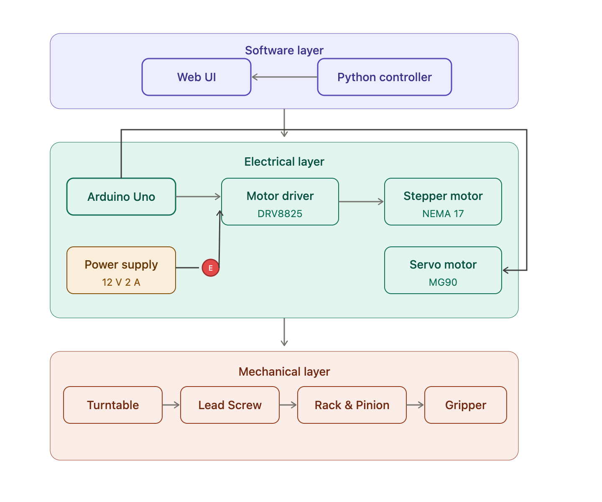
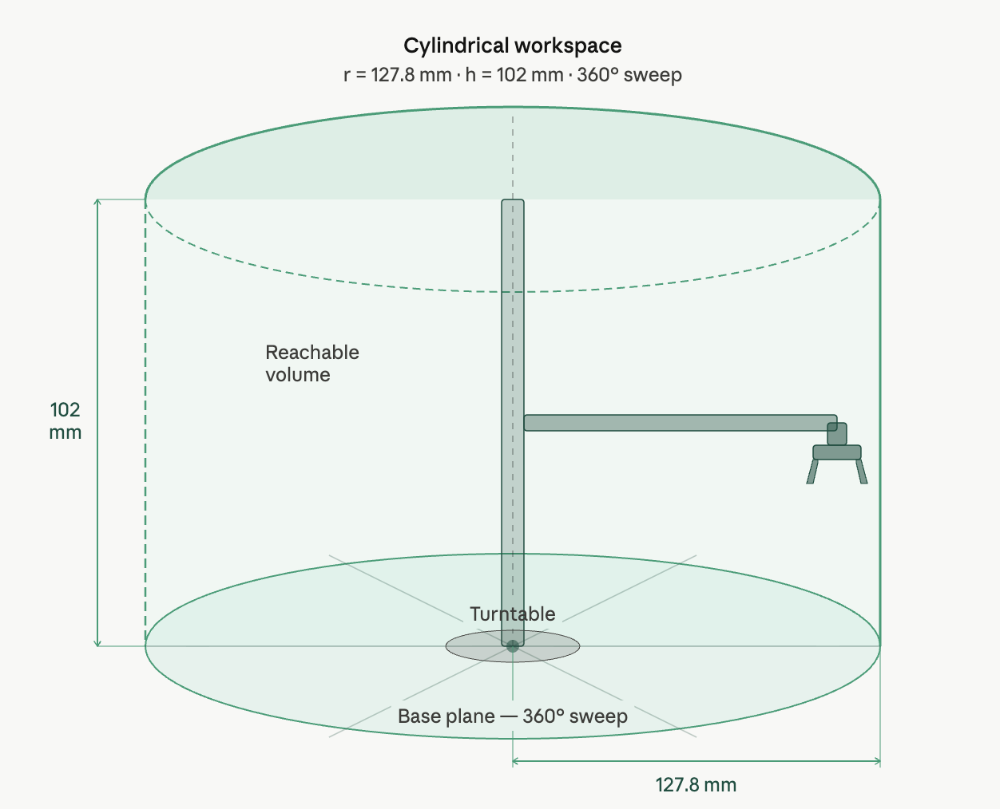
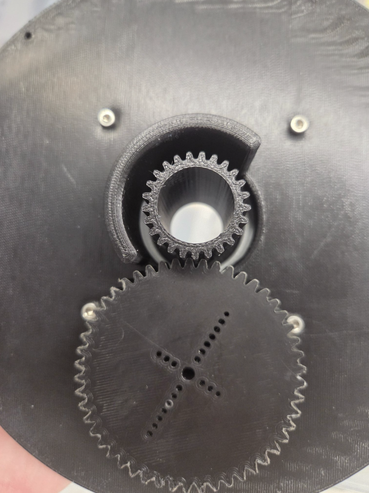
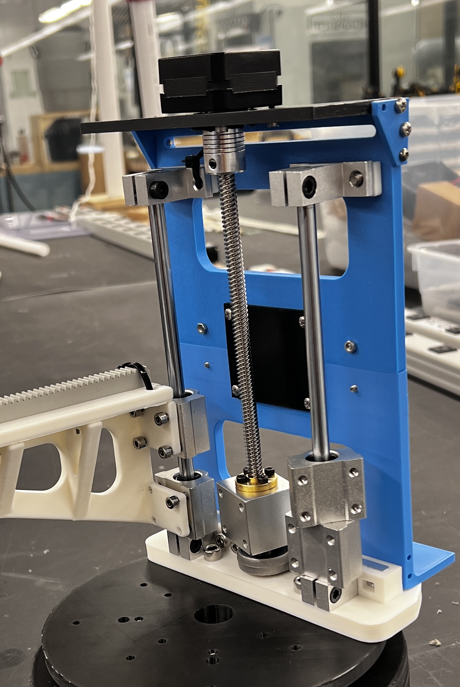
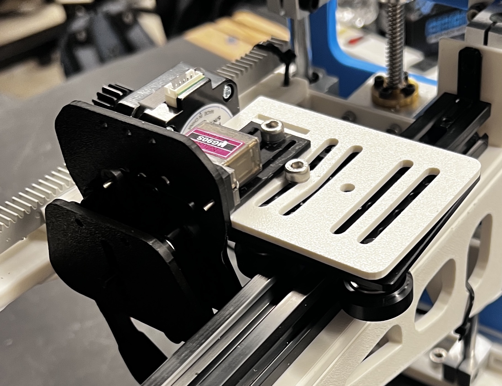
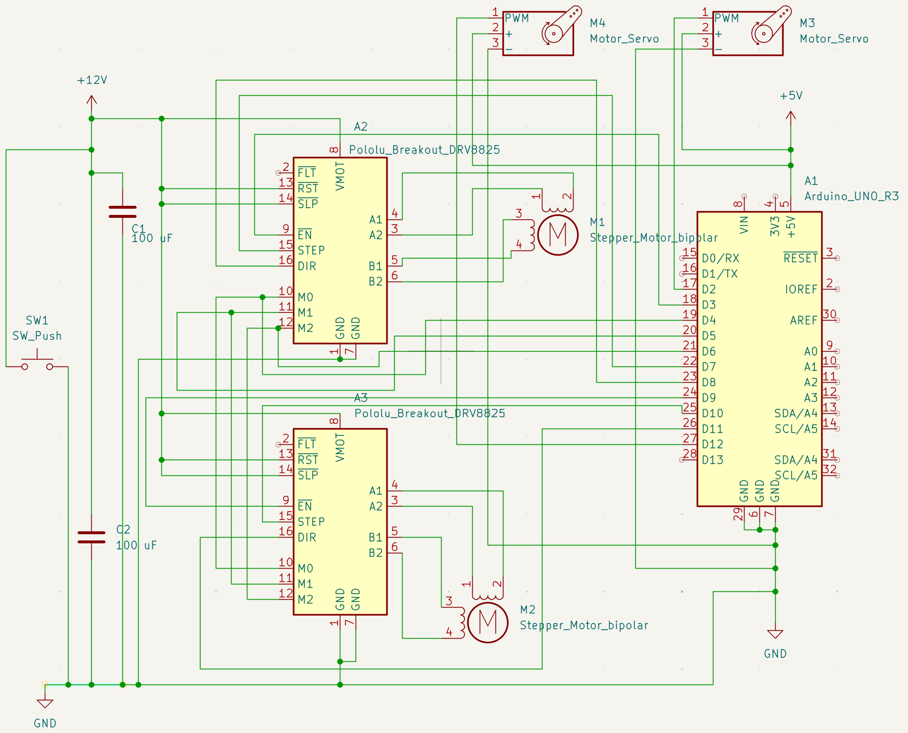

SpaceCap
Rapid Prototyping • Electronics • DFA • Arduino
SpaceCap: a 3-DOF robotic arm to capture cooperative debris in space
Space debris is a growing threat to operational satellites and future missions. SpaceCap's 3-DOF configuration is designed to demonstrate controlled debris capture via teleoperation at lab scale, validating the core mechanics of reach, align, and grasp before scaling to an on-orbit system
The system adopts an RPP (revolute–prismatic–prismatic) architecture and operates within a cylindrical workspace, enabling consistent positioning and linear extension toward target objects. This RPP configuration was selected to prioritize positional stability and linear target approach behavior within a cylindrical workspace, making it well suited for an early-stage debris capture demonstrator.The prototype can repeatedly reach target coordinates with stable positioning accuracy and grasp representative objects with widths below 50 mm and masses under 20 g.
Subsystems Overview


Mechanical


The base joint achieves full 360° rotation using a servo-driven gear stack system. A gear mounted directly on the MG90 servo (180° ROM) transfers torque to a smaller gear on the turntable, providing a 2:1 transmission rate. The rotating platform sits on a Lazy Susan bearing, which is mounted to a 3D-printed base that houses the wiring and keeps the COM low.



The two prismatic joints are both driven by NEMA 17 stepper motors. The vertical joint is actuated through a lead screw mechanism, chosen for its resistance to back-driving and mechanical stability. The horizontal joint extends radially via a rack-and-pinion system coupled to the stepper motor mounted on a wheeled carraige assembly. The carraige travels along an aluminum linear rail, constraining lateral motion and maintaining alignment during extension and retraction.
Electrical

The electrical system is powered by 12V power supply. Two DRV8825 motor drivers interface the NEMA 17 stepper motors for the vertical and the horizontal joints, providing microstepping capability for precise motion control. Two MG90 servos handle the base rotation and the gripper. A hardware toggle switch is implemented as an emergency stop (E-stop), allowing rapid power interruption to the actuation system in the event of unintended motion or mechanical interference.
Control
A browser-based control panel that routes motion commands through a Python controller provides a visual interaction. The interface displays each actuator's current position and status, supporting individual joint control and zeroing.